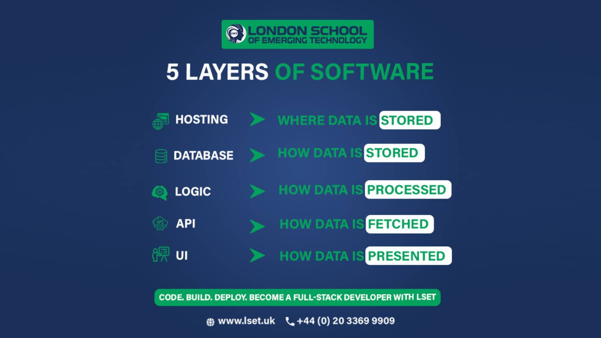

A software design pattern that separates an application into distinct logical layers, each with its own specific responsibility.

Multitier architecture, also known as n-tier architecture, is a client-server design where the application is divided into separate layers or tiers. Each tier handles a specific function and communicates with the tiers directly above and below it.
This separation makes applications easier to develop, maintain, scale, and secure.
When a user submits a form on a website, the presentation tier sends the data to the application tier. The application tier processes the data according to business rules and communicates with the data tier to store or retrieve information. The result is then sent back up to the presentation tier for display.
An online banking system uses multitier architecture: the website is the presentation tier, the transaction processing system is the application tier, and the customer account database is the data tier. Each layer is secured and managed separately.